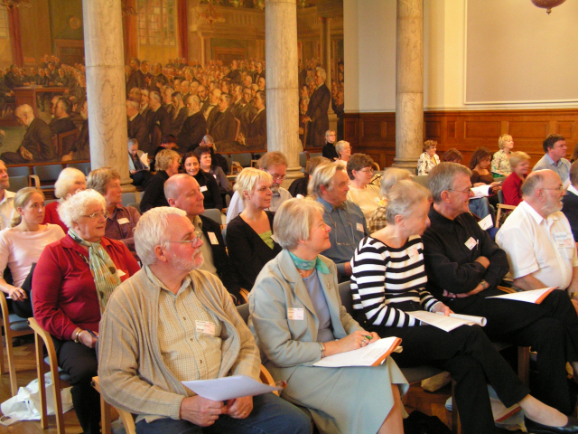

청주시 노인 전문 병원의 경우 100억 투자 후 만든 신축병원이었지만 노사 갈등으로 5개월 만에 폐업으로 인해, 청주 시민들은 의료서비스를 못 받게 되는 간접 손해가 발생했다. 갈등이 늘어날수록 손실 비용이 증간한다. 즉, 사회적 비용이 증가하는 것이다. 갈등이 해결되지 않는다는 것은 각자의 목표만 있고 평행선을 달리고 있다는 것을 의미한다. 이런 경우 변화에 대한 사회적 합의를 위해 토론이 필요하다.

과거에 하르츠 개혁은 노동개혁위원회 15명을 구성하여 합의된 내용은 쟁점화하지 않는다는 원칙을 세웠다. 노동개혁위원회는 합의회의이다. 운동 경기라면 심판이 있어야 하듯이 합의회의는 편파적이지 않고 중립적인 태도를 취하는 것이 중요한 원칙이다. 독일은 정권이 교체되었다는 이유로 법규가 바뀌지 않는다. 신뢰 유지 차원에서 그대로 유지한다. 국가 비전을 좌우하는 정책은 연속적으로 추진이 필요하다. 덴마크는 시민합의회의를 통해 사회적 이슈에 대해 시민 의견을 묻고 공론화 하여 민주적인 방식으로 정책 결정에 반영한다. 시민합의회의는 운영의 객관성, 공정성, 중립성을 유지할 필요가 있다. 사회적 합의를 통해 불신보다는 신뢰가 있는 사회로 바꿔나가야 한다.